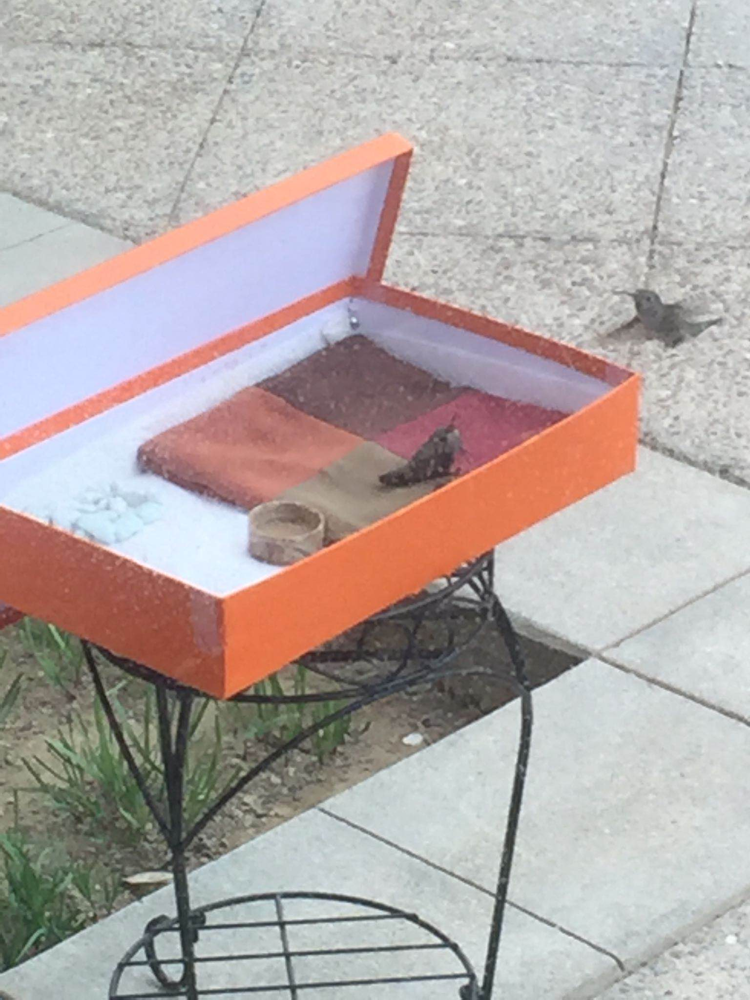

North America Chinese Writers Association Los Angeles
我家的後院，花木茂盛，經常可以看到有小鳥光顧。可我聽不懂鳥語，鳥也不說人話，我們之間素無往來。
直到有一回，為救助一隻受傷的蜂鳥，讓我與鳥有了近距離接觸。
那是一個周日，妻子在後院發現了一隻受傷的蜂鳥。這只蜂鳥的一隻翅膀不知為什麼被折斷了，傷口還流著血。出於憐憫之心，妻子把蜂鳥托在掌心帶回家，然後用棉簽沾上雲南白藥為它止血。抹上藥後，剛鬆手把蜂鳥放在桌面，它就折騰著要逃離，因為只剩下了一隻翅膀，只能在原處打轉。幾分鐘後，它大概是累了，才停止了撲騰，瞪著眼睛警惕的觀望著我們。
蜂鳥約有拇指大小，又長又尖的嘴、圓圓的眼睛，像個純真和羞怯的孩子，很討人喜歡。妻子騰了一個「愛瑪仕」空盒給它當住所，用一個Prada的布袋蓄了棉花當鋪毯，讓它在上面歇息。
然後，我倆按照餵雛雞的辦法，用剁碎的肉沫餵它。見它不吃，又挖來蚯吲,它仍是不理不採。
無奈之下我們只好發微信在朋友圈求助。晚上就收到朋友發來餵養蜂鳥的資料。
得知蜂鳥只需餵糖水或蜂蜜水即可存活，就找了兩個平底的小碟，一個盛放蜂蜜水、一個盛放水果汁，擺在它的眼前。為了讓它有安全感，擺放後我們就離開了。
第二天一大早，我去看它，水果汁不見有動過的痕跡，蜂蜜水喝的已見杯底。看來它愛喝蜂蜜水，我連忙清洗了小碟，換上了新的蜂蜜水。
再一次給蜂鳥塗抹過雲南白藥後，我就把它連同「住宅」搬到了後院，讓它享受大自然的環境。
為了防止地面爬行的蜥蜴等動物再次傷害到它，我又買了一個花盆架，建成空中樓閣，讓她高高在上。妻子還把盒蓋做成了能竪起來的一面牆，為蜂鳥擋海風。
這是我隔著玻璃拍攝的「梁山伯」到來探望「祝英台」時的情景
到了下午的時分，妻子忽然發現，在蜂鳥住宅的上方，有另外一隻蜂鳥，像一架直升飛機似的，懸停在距它大約兩米高的空中。幾分鐘後，徑直飛到「住宅」的平台上，與它卿卿我我，嘴對嘴的不知是親吻還是餵食。我們高興極了，連忙隔著玻璃門悄悄給它們拍照。
這一髮現引起了我和妻子的極大的興趣，猜測著這兩只蜂鳥之間是什麼關係？
朋友在網上查詢後回復說，如果是公蜂鳥，胸前會有紅點。經觀察，前來探望的蜂鳥胸前有紅點，而這只受傷的蜂鳥沒有。我首先否定了它倆是父女關係，因為我聽說鳥類是父母共同哺育兒女。雛鳥能飛後就會離「家」獨立，與其他雛鳥形成小群體，相處一年後就會配對。我以人類的情感來推測鳥類，認為它倆是蜂鳥里的情侶，演繹的是一場梁山伯與祝英台不離不棄的故事。
打這以後，每天的下午，我和妻子就會一邊品茶，一邊關注著「梁山伯」的到來，欣賞它們約會成了我倆的一大樂趣。
兩天的近距離接觸，蜂鳥大概能感覺到我和妻子都是好人，不會加害於它，塗藥時不再費力掙扎，表現出順從合作的態度。還好，給它抹傷的雲南白藥不是假藥，很快它的傷口就開始愈合。
我的任務是早上把蜂鳥連同「住宅「端出去、天黑前收回來。就這樣過了近二十天。一天我有事要去朋友家，早上出發時，把蜂鳥和它的住宅搬了出去。我見天有些陰，就把盒蓋全朝北擺放。為的是讓蜂鳥能多曬太陽。
下午突然接到妻子的電話，她哽咽著怪我沒把盒蓋的朝向擺對，說一隻烏鴉之類的大鳥從天而降，用翅膀把蜂鳥掀翻，蜂鳥可能是受傷或者是受到驚嚇，已奄奄一息了。我趕忙回家一看，果然不好，蜂鳥一動不動，第二天就與世長辭。
正好當天有個信佛的朋友來訪，給這個可憐的蜂鳥做了超度後，我們把它安放在一個紙盒里入殮掩埋。
連續好多天，我的心沈甸甸的，為沒能保護好這只蜂鳥而內疚，奧悔自己只考慮防範地面的動物傷害到它，卻忽略了天空也有壞鳥欺凌弱者。
此後的後院依然是陽光燦爛鳥語花香。有幾次我發現有蜂鳥從附近掠過。那熟悉的身影讓我深信，它就是蜂鳥中的「梁山伯與祝英台」。